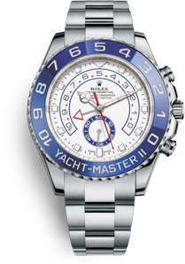
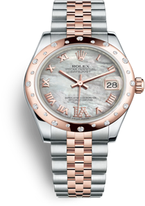
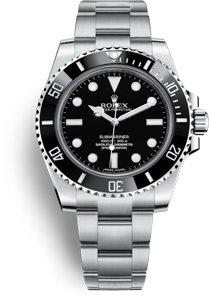
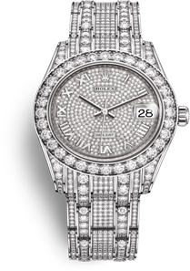
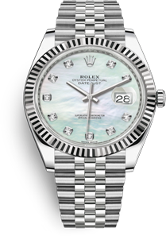
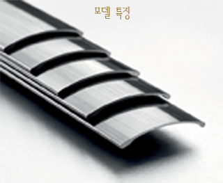
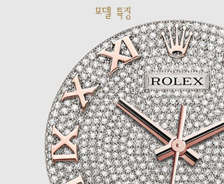
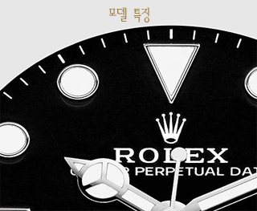

-
YACHT-MASTER II
모든YACHT-MASTER 모델 보기  오이스터 Oyster, 44mm
오이스터스틸 Oystersteel -
PEARLMASTER 39
모든PEARLMASTER 모델 보기  오이스터 Oyster, 39mm
에버로즈Everose골드 -
SEA-DWELLER
모든SEA-DWELLE 모델 보기  오이스터 Oyster, 43mm
오이스터스틸 Oystersteel -
PEARLMASTER 34
모든PEARLMASTER 모델 보기  오이스터 Oyster, 34mm
화이트골드와 다이아몬드 -
LADY-DATEJUST 28
모든DATEJUST 모델 보기  오이스터 Oyster, 28mm
플래티넘과 다이아몬드 -
상품 더보기
+
-
세일러의 정신이 담겨 있는
롤렉스 요트-마스터Yacht-Master와
요트-마스터 II Yacht-Master II 모델
1950년대부터 롤렉스와 요트 세계가 맺고 있는
긴밀한 유대 관계에 영감을 얻어 탄생한 시계. 기능과
디자인이 조화를 이룬 요트-마스터와
롤렉스의 최고급 기술이 접목된 요트-마스터 II는
요트 대회를 위해 제작된
레가타 크로노그래프입니다. 롤렉스는 스틸 시계의 케이스 제작에 오이스터스틸을
사용합니다. 904L 스틸 제품군에 속하는
오이스터스틸은 롤렉스에서 특별히 개발한 초합금으로
첨단 기술, 항공, 화학 등 탁월한 내부식성이 요구되는
분야에 주로 사용되는 특수 소재입니다. 뛰어난 저항력을
자랑하는 오이스터스틸은 극한의 환경에서도 특유의
아름다움을 유지할 뿐 아니라, 연마를 거치면 더 없이
멋진 광택을 냅니다. -
롤렉스가 자체 주조한 18캐럿
옐로우, 화이트 또는
애버로즈Everose골드로만 제작되며
다이아몬드, 사파이어, 루비 등
아름다운 보석 세팅과
화려한 다이얼이 특징인
롤렉스 펄마스터Pearlmaster는
완만한 곡선의
펄 마스터 디자인을
갖춘 모델입니다. 핑크 골드 시계의 아름다운 컬러를
오래도록 보존하기위하여,
롤렉스는 자체적으로
특별한 18캐럿 핑크 골드합금인
에버로즈 골드를 개발하여
특허를 획득했습니다.
핑크 골드 버전의 모든 롤렉스 모델에
사용되고 있습니다. -
심해 탐험을 위해 롤렉스에서
개발한 고성능 다이버 워치.
1,220미터(4,000피트)와
3,900미터(12,800피트)의 수심에
견디도록 제작된
롤렉스 씨-드웰러Sea-Dweller와
롤렉스 딥씨Rolex Deepsea는
프로페셔널 다이버들과
수십 년간 협력하여
탄생한 모델입니다. 롤렉스는 스틸 시계의 케이스 제작에 오이스터스틸을
사용합니다. 904L 스틸 제품군에 속하는
오이스터스틸은 롤렉스에서 특별히 개발한 초합금으로
첨단 기술, 항공, 화학 등 탁월한 내부식성이 요구되는
분야에 주로 사용되는 특수 소재입니다. 뛰어난 저항력을
자랑하는 오이스터스틸은 극한의 환경에서도 특유의
아름다움을 유지할 뿐 아니라, 연마를 거치면 더 없이
멋진 광택을 냅니다. -
세일러의 정신이 담겨 있는
롤렉스 요트-마스터Yacht-Master와
요트-마스터 II Yacht-Master II 모델
1950년대부터 롤렉스와 요트 세계가 맺고 있는
긴밀한 유대 관계에 영감을 얻어 탄생한 시계. 기능과
디자인이 조화를 이룬 요트-마스터와
롤렉스의 최고급 기술이 접목된 요트-마스터 II는
요트 대회를 위해 제작된
레가타 크로노그래프입니다.롤렉스는 스틸 시계의 케이스 제작에 오이스터스틸을
사용합니다. 904L 스틸 제품군에 속하는
오이스터스틸은 롤렉스에서 특별히 개발한 초합금으로
첨단 기술, 항공, 화학 등 탁월한 내부식성이 요구되는
분야에 주로 사용되는 특수 소재입니다. 뛰어난 저항력을
자랑하는 오이스터스틸은 극한의 환경에서도 특유의
아름다움을 유지할 뿐 아니라, 연마를 거치면 더 없이
멋진 광택을 냅니다. -
세일러의 정신이 담겨 있는
롤렉스 요트-마스터Yacht-Master와
요트-마스터 II Yacht-Master II 모델
1950년대부터 롤렉스와 요트 세계가 맺고 있는
긴밀한 유대 관계에 영감을 얻어 탄생한 시계. 기능과
디자인이 조화를 이룬 요트-마스터와
롤렉스의 최고급 기술이 접목된 요트-마스터 II는
요트 대회를 위해 제작된
레가타 크로노그래프입니다.롤렉스는 스틸 시계의 케이스 제작에 오이스터스틸을
사용합니다. 904L 스틸 제품군에 속하는
오이스터스틸은 롤렉스에서 특별히 개발한 초합금으로
첨단 기술, 항공, 화학 등 탁월한 내부식성이 요구되는
분야에 주로 사용되는 특수 소재입니다. 뛰어난 저항력을
자랑하는 오이스터스틸은 극한의 환경에서도 특유의
아름다움을 유지할 뿐 아니라, 연마를 거치면 더 없이
멋진 광택을 냅니다.